Keil介绍
Keil 是美国 Keil Software 公司出品的51系列兼容单片机 C 语言软件开发系统，与汇编相比，C 语言在功能上、结构性、可读性、可维护性上有明显的优势，因而易学易用。Keil 提供了包括 C 编译器、宏汇编、链接器、库管理和一个功能强大的仿真调试器等在内的完整开发方案，通过一个集成开发环境（μVision）将这些部分组合在一起。
运行 Keil 软件需要 WIN98、NT、WIN2000、WINXP 等操作系统。如果使用 C 语言编程，那么 Keil 几乎是不二之选，即使不使用 C 语言而仅用汇编语言编程，其集成环境强大的软件仿真调试也会令事情事半功倍。
Keil的下载与安装
● Keil安装步骤
1) 下载完Keil压缩包，鼠标右键解压
2) 打开文件，找到Keil安装程序，右键“以管理员身份运行”
3) 进入安装界面，点击Next按钮
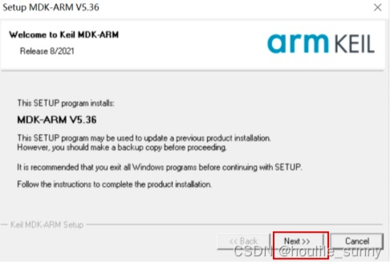
4) 勾选"I agree to all the terms of…"，然后点击"Next按钮"
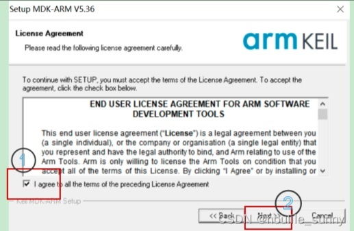
5) 点击"Browse"按钮，选择安装路径到其他盘（不建议安装在C盘），两个安装路径都修改到其他盘后，再点击"Next"按钮
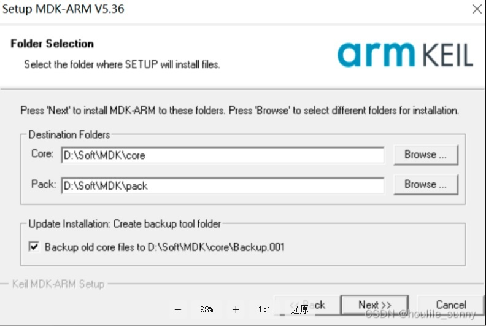
6) 四个内容随便填，再点击"Next"按钮
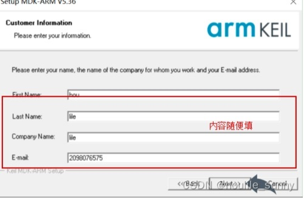
7) 等待安装
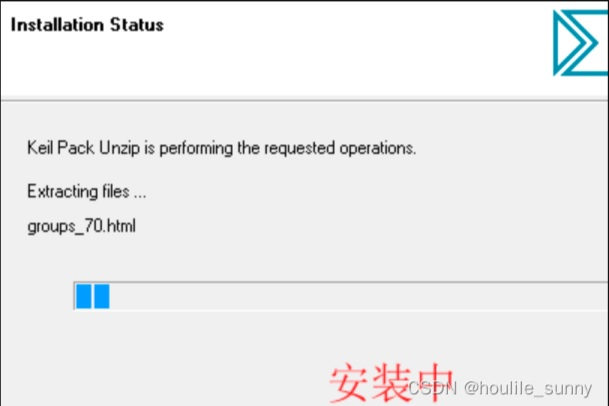
8) 点击"Finish"，结束
keil注册激活
1) 双击打开“keil uVision5”
2) 点击菜单栏File，然后点击License选项
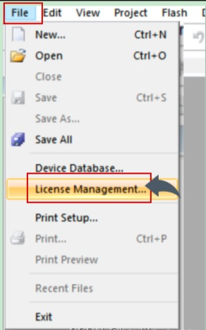
3) 复制左上角的ID号
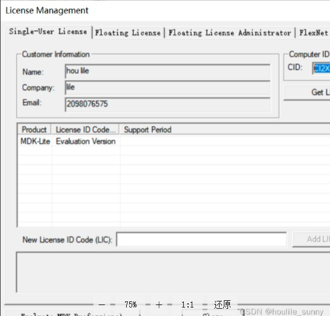
4) 在解压文件夹中找到“keygen”，鼠标右键“以管理员身份运行”
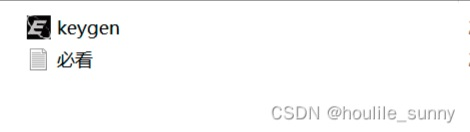
5) 复制CID中的内容，将其粘贴到①中，然后选择②“Target”选项框中ARM选项，再点击“Generate”，然后复制生成内容
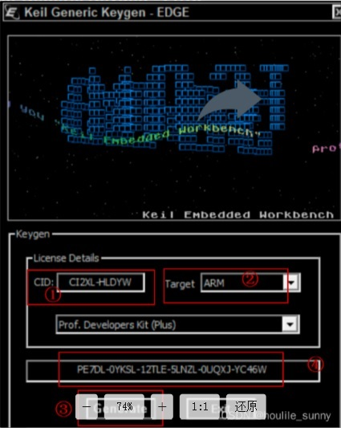
6) 将其粘贴“New license”中然后点击“Add LIC”。点击“close”，即安装完成！
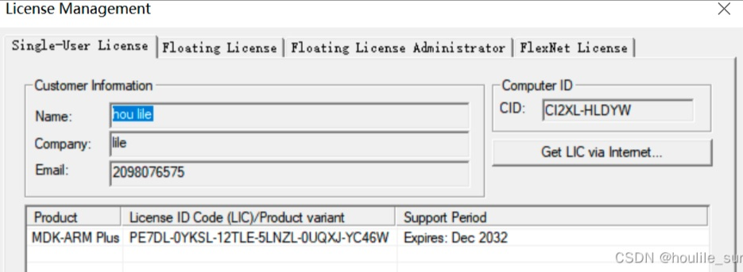
STM32 Pack包的安装
1) 进入keil中，点击“pack installer”组件
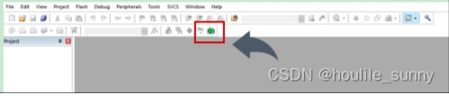
2) 在“device”中点击“STM……”开头的文件，点击“+”号，找到“STM32F1 series”
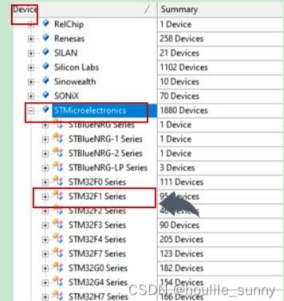
3) 在右侧的菜单栏中，找到对应的软件包下载即可。之前已经装过pack，因此显示已安装
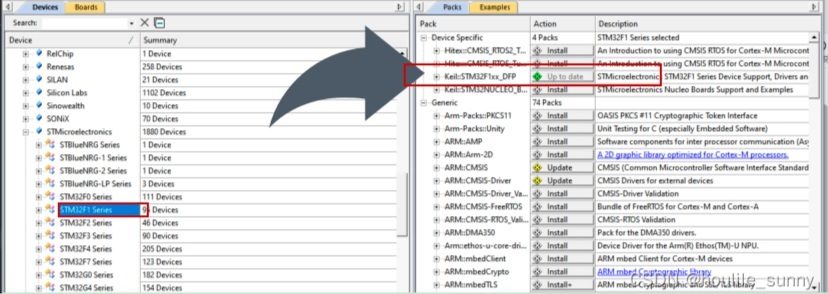
Keil创建工程
● 新建工程
1) 点击“project”-“new μVision project”，之后“Ctrl+s”保存工程
2) 工程建好后，会弹出“芯片选型”窗口，在此界面下进行芯片选型
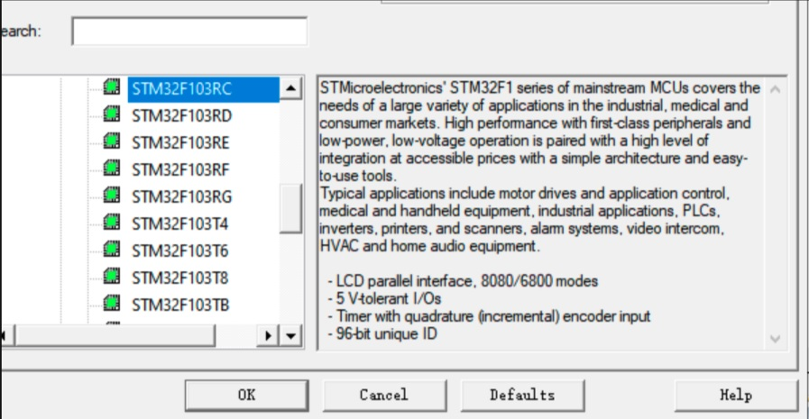
3) 芯片选型结束后，出现配置窗口，勾选对应选项，点击OK即可
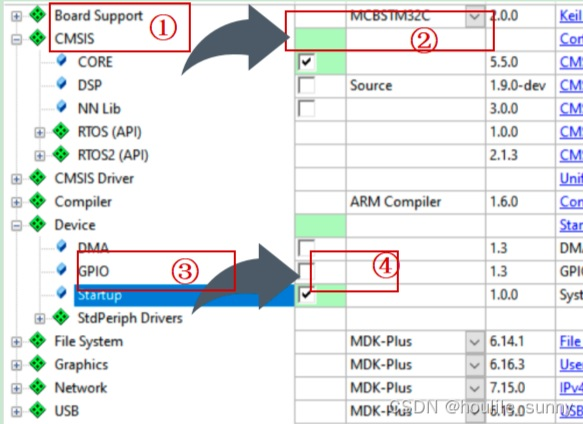
● 新建StartUp.s文件
1) 点击“source”，右键“Add new item to…”，新建文件，之后“Ctrl+s”保存文件，文件命名为
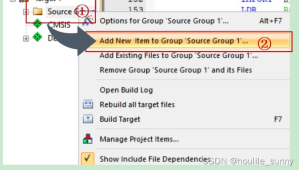
● 修改配置
1) 生成HEX文件,点击“魔法棒按钮”-“ouput”，将“Create Hex file”选项勾选起来
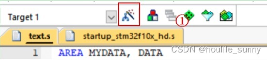
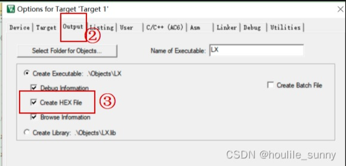
2) 修改“Debug”模式为“软件仿真”。依旧点开“魔法棒”-“Debug”，修改为“Use Simulater”
其中，修改Dialog DLL内容：DARMSTM.DLL;修改Parameter：-p+芯片型号选型
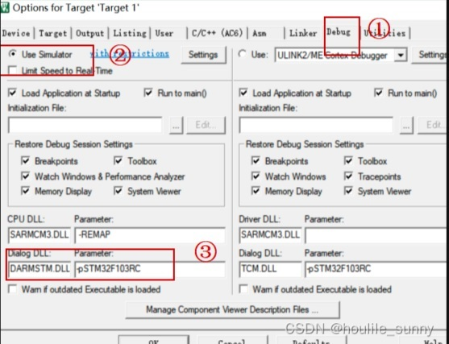
● 在.s文件中编写代码
1) 写入如下程序：
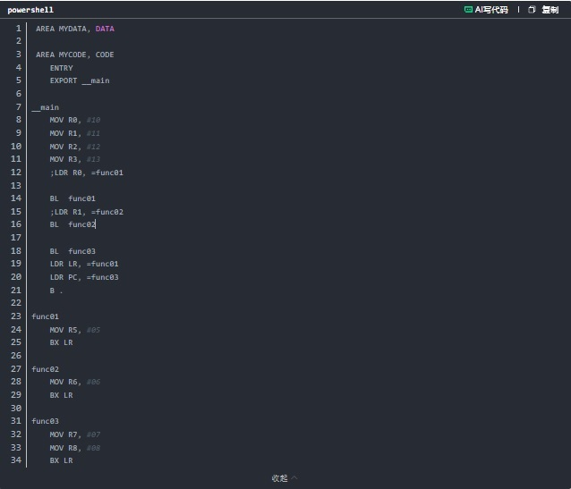
2) 编译，按菜单栏上的“下载”按钮
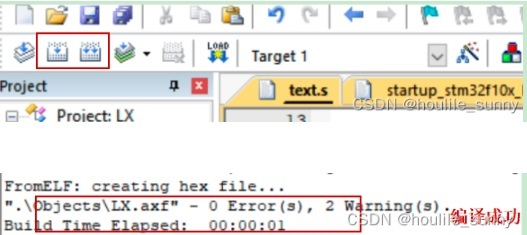
3) 按下菜单栏“D”按钮，进入调试
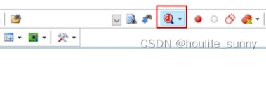
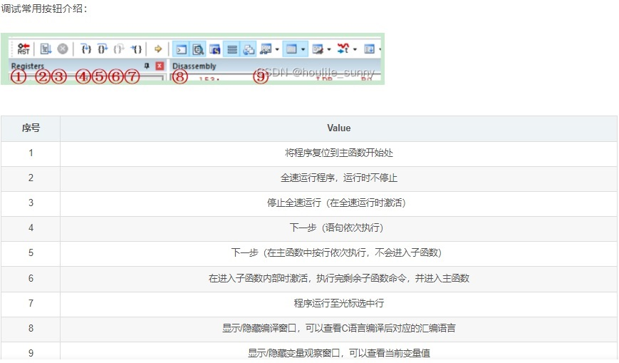
● 分析HEX文件
通过记事本的形式打开hex文件，其内容是这样的
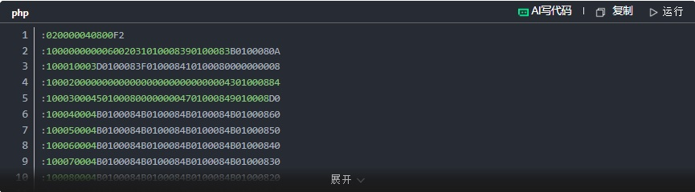
该文件为16进制的一串字符。hex文件的第一排字符称之为扩展线性地址记录，也称为32位地址记录或HEX386记录。
在第一行数据020000040800F2中，其实际表达为0x02 0x00 0x00 0x04 0x08 0x00 0xf2。具体含义为
第一个字节 0x02表示本行数据的长度；
第二、三字节 0x00 0x00表示本行数据的起始地址；
第四字节 0x04表示数据类型。数据类型有：0x00、0x01、0x02、0x03、0x04、0x05；
‘00’ Data Rrecord：用来记录数据，HEX文件的大部分记录都是数据记录；
‘01’ End of File Record: 用来标识文件结束，放在文件的最后，标识HEX文件的结尾；
‘02’ Extended Segment Address Record: 用来标识扩展段地址的记录；
‘03’ Start Segment Address Record:开始段地址记录；
‘04’ Extended Linear Address Record: 用来标识扩展线性地址的记录；
‘05’ Start Linear Address Record:开始线性地址记录；
然后是数据，0x08 0x00
最后一个字节 0xf2为校验和。
HEX文件
● 介绍
HEX 文件是由一行行符合Intel HEX文件格式的ASCII 文本文件。在Intel HEX 文件中，每一行包含一个 HEX 记录 。 这些记录由对应机器语言码和/或常量数据的十六进制编码数字组成。
HEX 文件通常用于传输将被存于ROM 或者EPROM 中的程序和数据。大多数EPROM 编程器或模拟器使用HEX 文件。
● hex文件记录格式
(1)域
Intel HEX由任意数量的十六进制记录组成。每个记录包含5个域，它们按以下格式排列：:llaaaatt[dd...]cc
每一组字母对应一个不同的域，每一个字母对应一个十六进制编码的数字。每一个域由至少两个十六进制编码数字组成，它们构成一个字节，就像以下描述的那样：
每个Intel HEX记录都由冒号开头.
(2)ll 是数据长度域
它代表记录当中数据字节(dd)的数量。
(3)aaaa 是地址域
它代表记录当中数据的起始地址。
(4)tt 是代表HEX记录类型的域
它可能是以下数据当中的一个:
00 – 数据记录
01 – 文件结束记录
02 – 扩展段地址记录
04 – 扩展线性地址记录
(5)dd 是数据域
它代表一个字节的数据。一个记录可以有许多数据字节.记录当中数据字节的数量必须和数据长度域(ll)中指定的数字相符。
(6)cc 是校验和域
它表示这个记录的校验和。校验和的计算是通过将记录当中所有十六进制编码数字对的值相加，以256为模进行以下补足。
● 数据记录
Intel HEX文件由任意数量以回车换行符结束的数据记录组成。数据记录外观如下:
:10246200464C5549442050524F46494C4500464C33
其中:
10代表这个记录当中数据字节的数量。
2462 ：数据将被下载到存储器当中的地址。
00 ：记录类型(数据记录)
464C…464C是数据。
33： 记录的校验和。